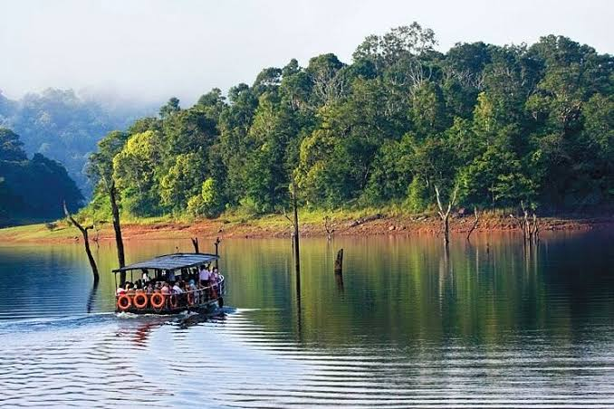

Wayanad
Timing: 8:00 AM to 5:00 PM
Entry Fee: 100 (Wildlife Sanctuary)
Hill district with forests, waterfalls and wildlife.
Nearby Restaurants:
- Wilton Restaurant
- Udupi Restaurant
- 1980¡¯s A Nostalgic Restaurant
Timing: 8:00 AM to 5:00 PM
Entry Fee: 100 (Wildlife Sanctuary)
Hill district with forests, waterfalls and wildlife.
Nearby Restaurants:

Timing: 6:00 AM - 6:00 PM
Entry Fee:rs.45 ( Adults)
Thekkady is home to Periyar Wildlife Sanctuary, known for elephants and rich biodiversity.
Nearby Restaurants:

Timing: All Day
Entry Fee: Free (Boat ride extra)
Known for beautiful backwaters and houseboats.
Nearby Restaurants:

Timing: 6:00 AM to 7:00 PM
Entry Fee: Free
Only cliff beach in Kerala with scenic views.
Nearby Restaurants:

Timing: 8:00 AM to 6:00 PM
Entry Fee: 40
Largest waterfall in Kerala.
Nearby Restaurants:

Timing: 10:00 AM - 6:00 PM (Closed on Mondays)
Entry Fee:rs.30 (Adults), rs.10 (Children)
Kerala's first forest museum, showcasing biodiversity, wildlife, and forest resources.
Nearby Restaurants:

Timing: Open all day
Entry Fee:rs.10 (Park area)
Known as Love Shore, this beach is maintained by the Kerala Tourism Department.
Nearby Restaurants: